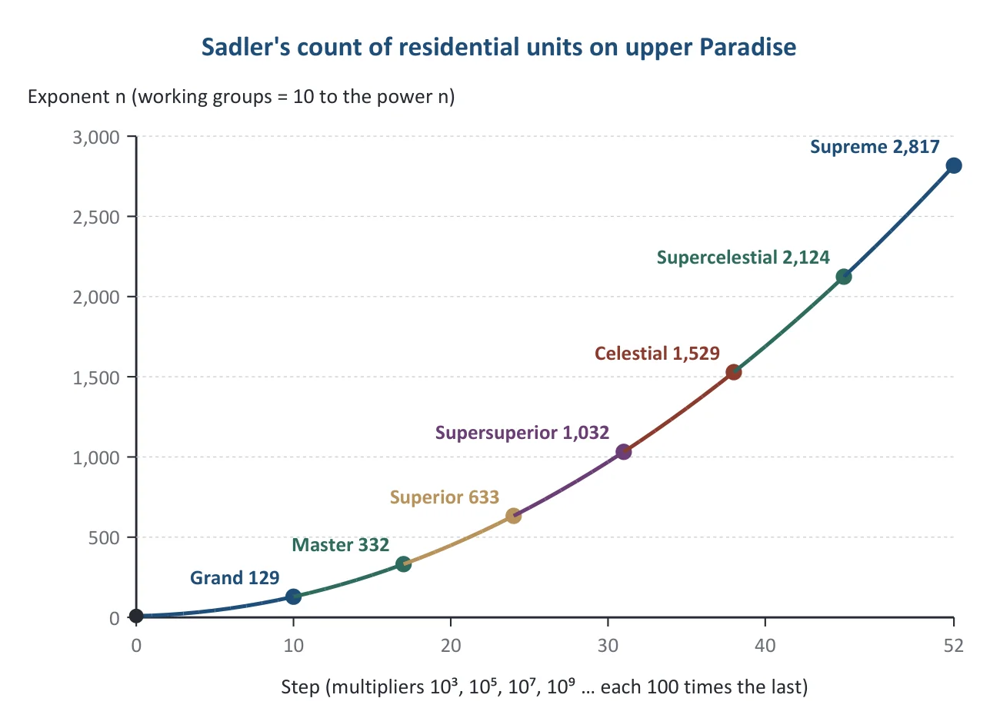

Original: Apêndice II, o Paraíso e o universo-mestre (pp. 166–176)
Como morada de Deus, o Paraíso é bastante fácil de compreender; considerado como um dos Sete Absolutos, é o mais misterioso de todos. Entrelaçando afirmações do texto, Sadler mostra que o Paraíso não é parte do universo-mestre, mas uma realidade anterior a ele, a fonte que outorga o espaço, a potência do espaço e o tempo. Depois calcula quantas unidades residenciais o Paraíso superior comporta, chegando a dez elevado à potência de 2.817, e coloca esse número ao lado das proporções dos níveis do espaço.
Entre os sete Absolutos da Infinitude, o Paraíso é aquele que é ao mesmo tempo impessoal e não Deidade. Sadler compara-o a uma “máquina absoluta” feita por Deus. Assim como as pessoas constroem máquinas para assumir o trabalho repetitivo, Deus pode ter feito algo semelhante — exceto que essa máquina, de algum modo, “sabe”. O que aprofunda o mistério é o seu isolamento.
O Paraíso não representa nada e nada representa o Paraíso. Não é uma força nem uma presença, é tão somente o Paraíso.0:4.13
Os três Absolutos da potencialidade são unificados no Absoluto Universal, e as três pessoas da Deidade são unificadas na Trindade. O Paraíso não tem um parceiro assim. Sadler considera esse isolamento uma tarefa que Deus deixou para as Deidades experienciais resolverem, e volta a ele na sua discussão da síntese poder-personalidade (Apêndice XXII).
O texto reúne a Ilha e o universo eterno que a rodeia sob o nome de “Sistema Paraíso-Havona” [12:1.11]. Nenhum dos dois tem origem no tempo, mas Havona, tal como os superuniversos, está dentro do espaço, enquanto apenas o Paraíso está fora dele. E, assim como o Filho é mais eterno do que o Espírito, o Paraíso é “mais eterno” do que Havona.
O Paraíso é o centro geográfico da infinitude; não é uma parte da criação universal, nem mesmo uma parte real do universo eterno de Havona.11:9.2
Sadler trata, portanto, o Paraíso como uma realidade “anterior ao universo-mestre”. Na Idade Zero o Paraíso existe, mas nem um fragmento do universo-mestre existe. Se Havona é o universo nuclear dos superuniversos (capítulo 8), será então o Paraíso o núcleo dos núcleos? Ele considera o ponto discutível, mas sustenta que, num certo sentido, o Paraíso é o verdadeiro núcleo. O texto descreve as zonas do espaço intermediário como uma extensão relativa do Paraíso [11:7.2], e essas zonas acabam por envolver todo o espaço. Acima de tudo, o Paraíso é a fonte de toda realidade que não é nem espírito nem mente. O espaço, a potência do espaço e o tempo são outorgas suas.
Sadler reúne numa tabela as afirmações do texto sobre o espaço. O Paraíso não ocupa espaço. O espaço é outorga sua e parece originar-se logo abaixo do Paraíso inferior. O espaço aproxima-se do absoluto sem ser absoluto, não é infinito e contém e condiciona o movimento.
O espaço não é infinito, ainda que tenha a sua origem no Paraíso; nem absoluto, pois é preenchido pelo Absoluto Inqualificável. Nós não conhecemos os limites absolutos do espaço, mas sabemos que o absoluto do tempo é a eternidade.12:5.2
Nesse ponto, Sadler raciocina da seguinte maneira. Antes de Havona, não havia espaço como fato; além do Paraíso, havia apenas o espaço intermediário. O espaço apareceu no “alvorecer da eternidade”, no mesmo momento que o universo central, como se alguma ação da Ilha tivesse empurrado para fora, para dentro do espaço intermediário.
O Paraíso não se limita a prover o espaço; também preenche esse espaço com algo: todo o potencial daquilo que se tornará a matéria de todos os universos, passados, presentes e futuros.
Essa derivação cósmica, contudo, é um evento de eternidade; em nenhum momento — passado, presente ou futuro — nem o espaço, nem o cosmo material saíram da nuclear Ilha de Luz.56:1.1
Sadler lê “um evento de eternidade” como algo que aconteceu uma vez e apenas uma vez. Se assim é, a outorga deve ter sido sem limite. Esse potencial, carregado por todo o espaço, é a potência do espaço, e a sua administração passou ao Absoluto Inqualificável. Para dizê-lo por analogia, o Paraíso investiu de uma só vez uma dotação infinita, e o Absoluto Inqualificável atua como o tesoureiro que a guarda e a desembolsa à medida que cada novo universo toma forma. A natureza do Absoluto Inqualificável não se altera, mas a sua função começa com a primeira idade. Sadler entende que a observação do texto de que esse Absoluto é “funcionalmente limitado ao espaço” [12:4.2] se refere exatamente a essa função.
1. O Absoluto da Deidade parece ser o ativador onipotente, enquanto o Absoluto Inqualificável parece ser o mecanizador todo-eficiente do universo dos universos, supremamente unificado e coordenado em ultimidade, e mesmo dos universos após universos, já feitos, em feitura ou ainda por fazer.0:11.4
Numa frase que reúne “já feitos, em feitura ou ainda por fazer” numa só, Sadler vê um controle puramente eterno que não leva em conta o tempo. Mecanizar e ativar são duas operações que geram tensão entre si, e resolver essa tensão é a obra do Absoluto Universal. Ele conjectura ainda que a outorga do espaço e da potência do espaço pode ter sido a repercussão do Paraíso ao aparecimento do Espírito Infinito, já que o Deus da Ação é o ativador do Paraíso [9:3.8]. Admite, contudo, que não sabe dizer se a triata de Havona ou os corpos escuros de gravidade vieram diretamente do Paraíso ou por meio do Absoluto Inqualificável.
Como o espaço, o tempo é um dom do Paraíso, mas não no mesmo sentido, apenas indiretamente. O tempo surge em virtude do movimento e porque a mente é inerentemente cônscia da seqüencialidade.12:5.1
Grosso modo: o espaço origina-se, aparentemente, logo abaixo do Paraíso inferior; o tempo origina-se logo acima do Paraíso superior.11:2.11
No Paraíso, o movimento é volitivo, mas, fora dele, tudo se move, do átomo às esferas de Havona. O tempo não é contado no Paraíso, embora seja contado nos circuitos de Havona, onde cada um do bilhão de mundos mantém o seu próprio tempo local [14:1.11]. Sadler sugere que a seqüência pode ser mais fundamental do que o tempo. Os cidadãos do Paraíso são conscientes de uma seqüência não temporal, e a seqüência temporal deriva da outorga indireta do Paraíso. Contudo, como ele próprio admite, o “como” exato da outorga do tempo pela Ilha permanece obscuro.
O texto chama o Paraíso de o corpo organizado mais gigantesco do universo-mestre [11:0.1], mas não dá as suas dimensões. O que ele fornece são números para a organização residencial da Terra Santa no Paraíso superior. Das suas sete zonas concêntricas, a segunda pertence aos ascendentes dos superuniversos; está dividida em sete setores, um por superuniverso, e cada setor em unidades residenciais, cada uma servindo a um bilhão de grupos de trabalho.
Dessas unidades, mil constituem uma divisão. Cem mil divisões são uma congregação. Dez milhões de congregações constituem uma assembléia. Um bilhão de assembléias constitui uma grande unidade.11:3.4
| Unidade | Unidades do nível inferior | Grupos de trabalho |
|---|---|---|
| Unidade residencial | — | 10⁹ |
| Divisão | 10³ | 10¹² |
| Congregação | 10⁵ | 10¹⁷ |
| Assembléia | 10⁷ | 10²⁴ |
| Grande unidade | 10⁹ | 10³³ |
Sadler nota que os multiplicadores seguem 10³, 10⁵, 10⁷, 10⁹, crescendo cem vezes a cada passo, e leva essa regra até o fim. As grandes unidades continuam até a sétima, e então as unidades-mestras, superiores, supra-superiores, celestes, supra-celestes e supremas desdobram-se cada uma em sete passos próprios. Uma única “sétima unidade suprema” no fim da série conteria dez elevado à potência de 2.817 grupos de trabalho. A aritmética é fácil de verificar: some-se todo número ímpar de 3 a 105 ao expoente inicial de 9, e o resultado é 9 + 2.808 = 2.817. Mesmo assim, o texto diz que essa organização ocupa bem menos de um por cento da área da segunda zona.

O texto fornece números efetivos apenas até a primeira grande unidade. Depois disso, diz apenas que as grandes unidades continuam até a sétima e que a série então se expande “em agrupamentos de sete”, das unidades-mestras até as unidades supremas. A suposição de que cada multiplicador continua a crescer cem vezes é uma extensão, feita por Sadler, da regra encontrada nos quatro primeiros passos. Dez elevado à potência de 2.817 não é, portanto, um número revelado, mas uma estimativa destinada a transmitir uma noção de escala.
Sadler passa a especular sobre o propósito das sete zonas residenciais. Se a primeira e a segunda zonas são para os que se originam no grande universo atual, as quatro seguintes podem destinar-se aos que um dia habitarão os níveis do espaço exterior, uma zona por nível, e a sétima aos cidadãos do Cosmos Infinito. Se os tamanhos das zonas fossem proporcionais aos dos níveis do espaço, então, pelas proporções do Apêndice XVI (grande universo 1, primário 100, secundário 10.000, terciário 1.000.000, quaternário 100.000.000), uma largura conjunta de uma polegada para as duas primeiras zonas faria a sexta zona ter cerca de 1.600 milhas de largura. Ele aponta também a fraqueza dessa comparação. Os níveis do espaço medem-se em anos-luz, mas o Paraíso não está no espaço, e a distância ali é uma “distância absoluta” [11:2.11] não espacial. Ainda assim, o cálculo laborioso torna um pouco mais tangível a única linha do texto sobre “o corpo organizado mais gigantesco”.